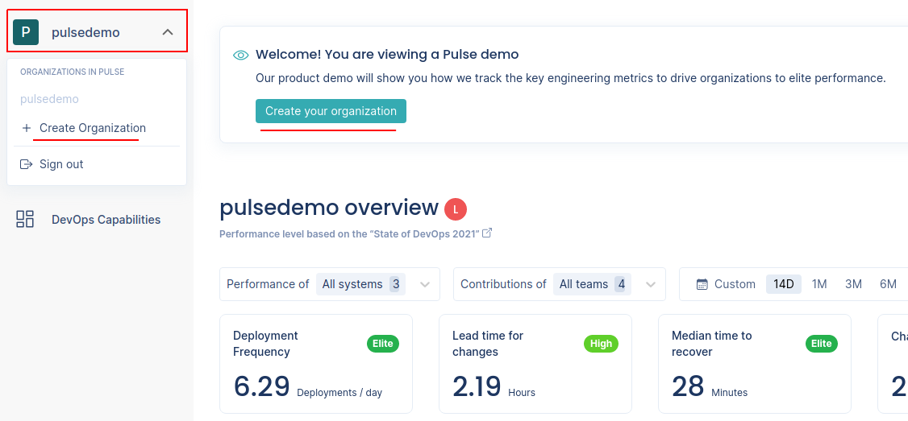
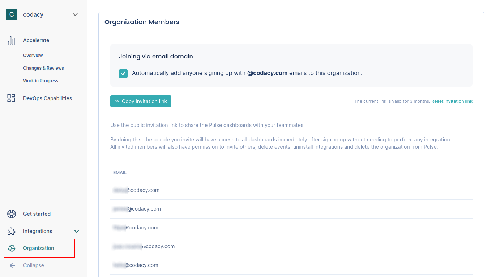

Getting started with Pulse¶
Pulse displays the following metrics to provide insights into the current and historic performance of your software delivery process:
Check out our product demo for an overview of Pulse's main features (recorded on January 16, 2023):
To calculate these metrics, you must complete these main steps to set up Pulse and to collect information from key events of your particular software development workflow:
-
Creating your organization on Pulse
Your organization on Pulse will aggregate and present all information relevant to your software development workflow.
-
Pushing data to Pulse
Send data about the key events in your software delivery workflow to feed the Pulse dashboards in real time.
-
Sharing access with teammates
Invite your teammates to your Pulse organization to share the access to the dashboards and metrics.
1. Creating your organization on Pulse¶
You must create an organization on Pulse to start the onboarding. Click the link in the welcome banner at the top of the page and follow the instructions.

To add more organizations, click the name of the current organization on the top left-hand corner and select Create Organization.
2. Pushing data to Pulse¶
Pulse provides push-based integrations with your workflow using the following alternatives:
-
One-click integrations
Pulse currently supports the "one-click" integrations listed in the table below that simplify the process of setting up your workflows to send data to Pulse.
Use this one-click integration... to report... necessary to calculate... GitHub integration or Bitbucket integration changes and deployments the Accelerate metrics deployment frequency and lead time for changes, including the drill-down metrics changes and reviews, and work in progress incidents the Accelerate metrics time to recover and change failure rate Jira integration issues lead and cycle time metrics incidents the Accelerate metrics time to recover and change failure rate PagerDuty integration incidents the Accelerate metrics time to recover and change failure rate Note
We recommend that whenever possible you use the integrations that match your stack because they're faster to set up. We plan to continue developing integrations for the most popular Git providers, CI/CD platforms, and incident management tools.
-
The Pulse CLI is a binary that you can use to push data to Pulse directly from your CI/CD workflows.
-
Use the Pulse Ingestion API in scenarios where it may not be feasible to use the CLI to send data to Pulse, such as when you have the data inside an application.
3. Sharing access with teammates¶
Share the Pulse dashboards with your teammates to bring more visibility to the metrics.
The most convenient way of ensuring that all the members of your company have access to the Pulse dashboards is by enabling the feature Joining via email domain on the Organization page. When this option is enabled, anyone who signs up to Pulse using an email address from your company is automatically added to your Pulse organization.
Alternatively, copy the invitation link from the Organization page and share the link with specific people. A convenient way to do this is to share and pin the link on your team's chat. The link is valid for 3 months, but you can refresh it at any moment.

Newcomers will have access to all dashboards immediately after signing up without needing to perform any integration.
About joining via email domain
Consider the following when using joining via email domain:
-
Joining via email domain isn't available for free email addresses.
-
Each email domain can only be used in one Pulse organization.
If an existing organization is already using your email domain to automatically join new users, you won't be able to activate this feature on another organization.
-
You can only enable joining via the email domain that you used to sign in to Pulse.
If you turn off the feature, you can only re-enable it using your email domain.
-
Turning off joining via email domain doesn't remove users from the organization.
If you turn off the feature, the users that joined while the feature was active will continue to have access to the organization on Pulse.
If you come across any issues please contact support.